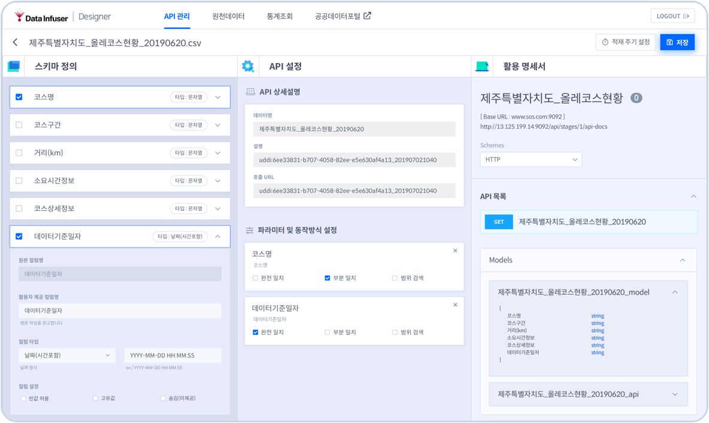
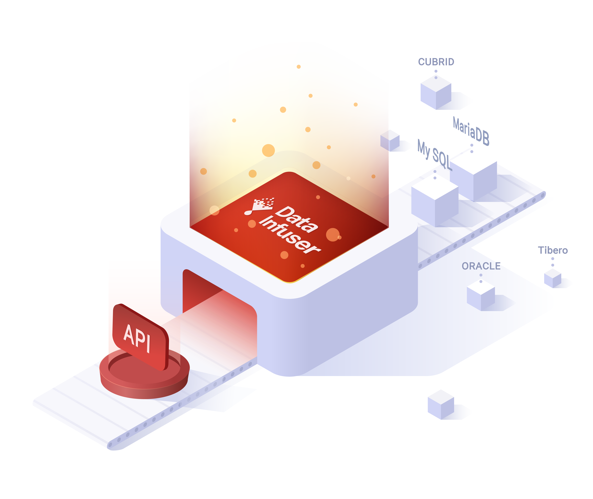
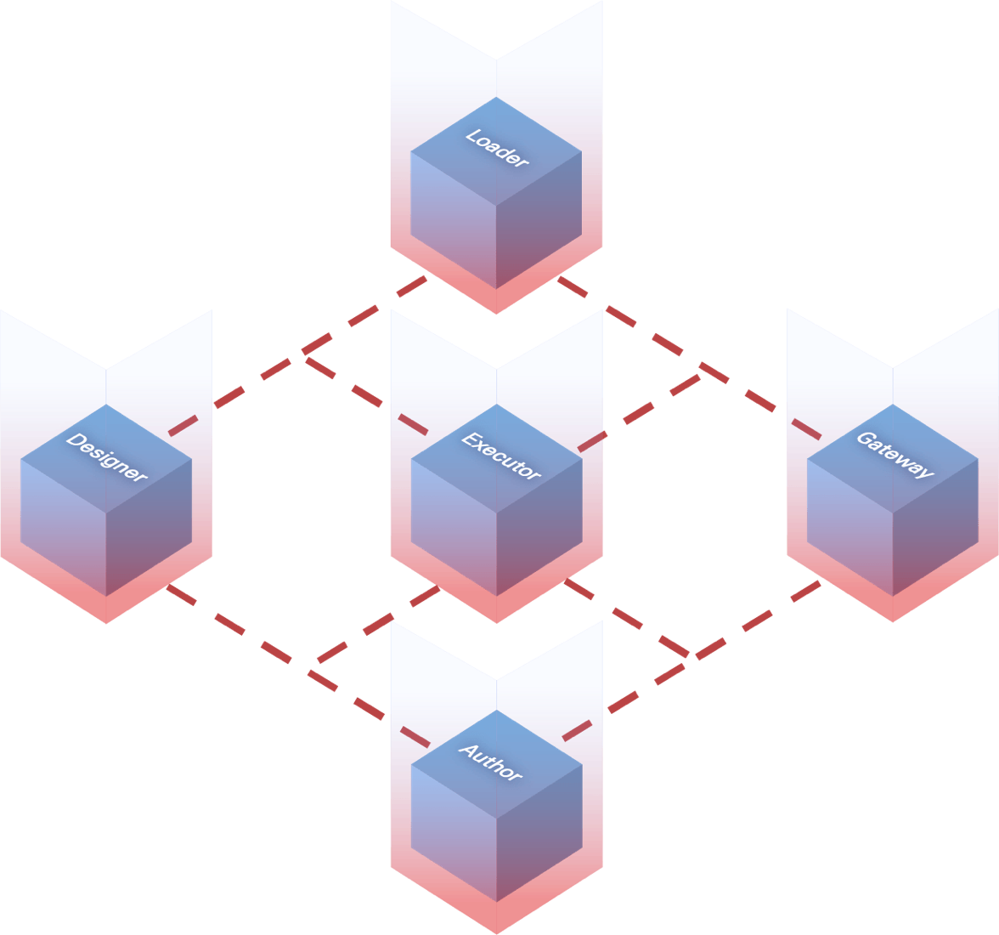
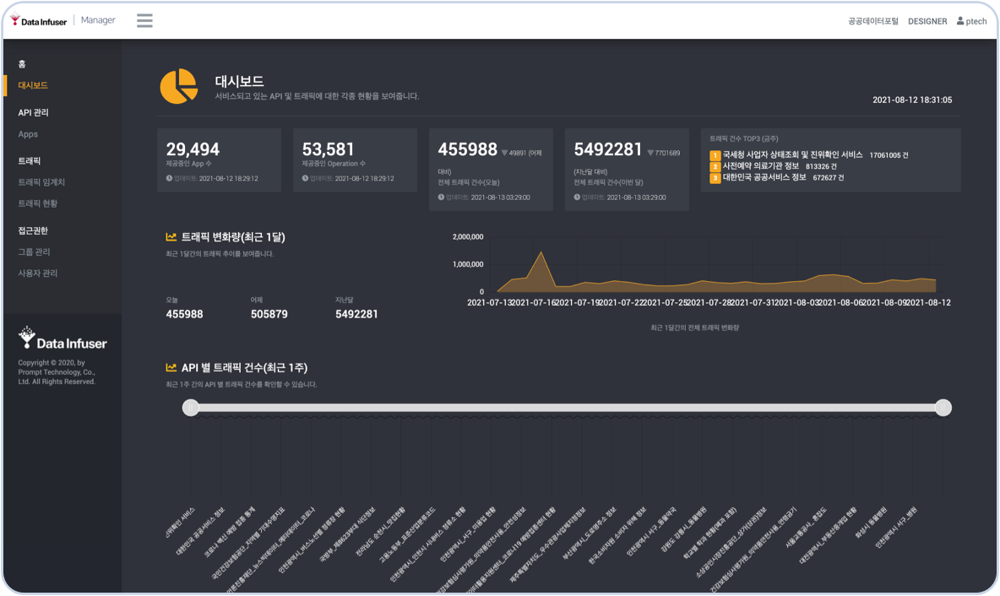

Instant API creation
When you use Data Infuser, you do not need to code.
Just with GUI-based simple operations,
you can immediately create and manage your APIs.
Select the desired data file and upload the file with a simple click.
The file contents are automatically entered into the database.
Create your own API through effortless operations.
Just with GUI-based simple operations,
you can immediately create and manage your APIs.
Select the desired data file and upload the file with a simple click.
The file contents are automatically entered into the database.
Create your own API through effortless operations.
/02.features/Designer-crop.gif)

Automated API docs
It is essential to read the API specifications before
using the API. Data Infuser automatically furnishes
API documentation by Swagger.
Swagger's interactive UI provides a nice visualization
of API operations, helping readers understand how the API works.
Even without perfectly understanding the API system,
you can build your API service after reading the API documentation.
using the API. Data Infuser automatically furnishes
API documentation by Swagger.
Swagger's interactive UI provides a nice visualization
of API operations, helping readers understand how the API works.
Even without perfectly understanding the API system,
you can build your API service after reading the API documentation.
Collection of
Various Data Sources
Various Data Sources
When the user inserts files (e.g. xlsx, CSV) or
DBMS
(e.g. Oracle, MySQL, MariaDB, CUBRID, Tibero) into the file uploader.
Data Infuser extracts data aptly according to each file format.
If the content of the source data keeps changing,
Data Infuser's scheduler automatically
collects and regularly updates data.
(e.g. Oracle, MySQL, MariaDB, CUBRID, Tibero) into the file uploader.
Data Infuser extracts data aptly according to each file format.
If the content of the source data keeps changing,
Data Infuser's scheduler automatically
collects and regularly updates data.


Microservice Architecture
Data infuser provides stable service in case of high traffic. The independence of each service enables
consistent deployment and elastic server control.
Each module within the service uses HTTP 2.0 based RPC
to foster communication, which results in overall
lighter and faster performance.
consistent deployment and elastic server control.
Each module within the service uses HTTP 2.0 based RPC
to foster communication, which results in overall
lighter and faster performance.
Admin Console
The Manager system helps administrators monitor and oversee the current state of generated API more efficiently through data visualization modules.
With Manager, you can view the list of APIs, ongoing changes in traffic, or the amount of traffic per API through the dashboard.
With Manager, you can view the list of APIs, ongoing changes in traffic, or the amount of traffic per API through the dashboard.

Rock-solid security
Data Infuser employs token-based authentication methods
that are at low risk of hacking.
Only verified users with validated API and authentication
keys can use the deployed API.
Encryption of personal information also makes
user information more secure.
that are at low risk of hacking.
Only verified users with validated API and authentication
keys can use the deployed API.
Encryption of personal information also makes
user information more secure.